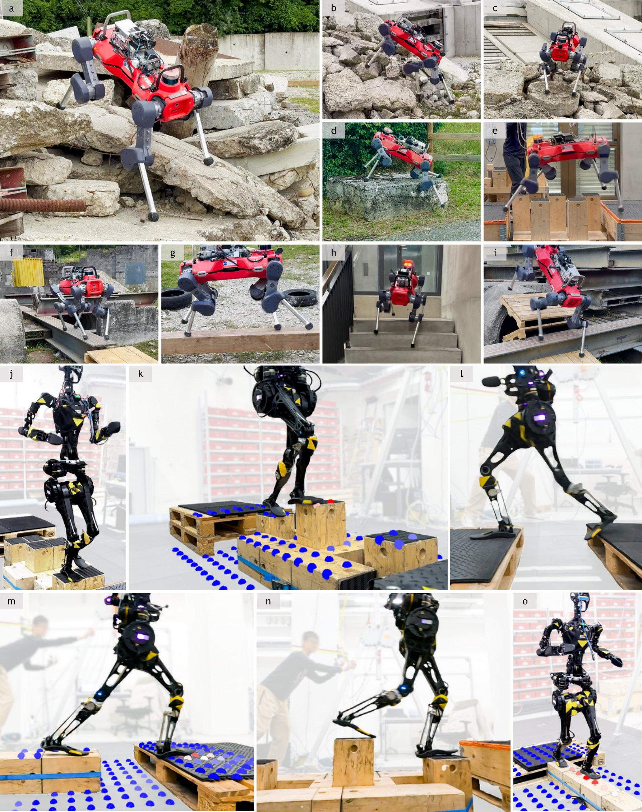
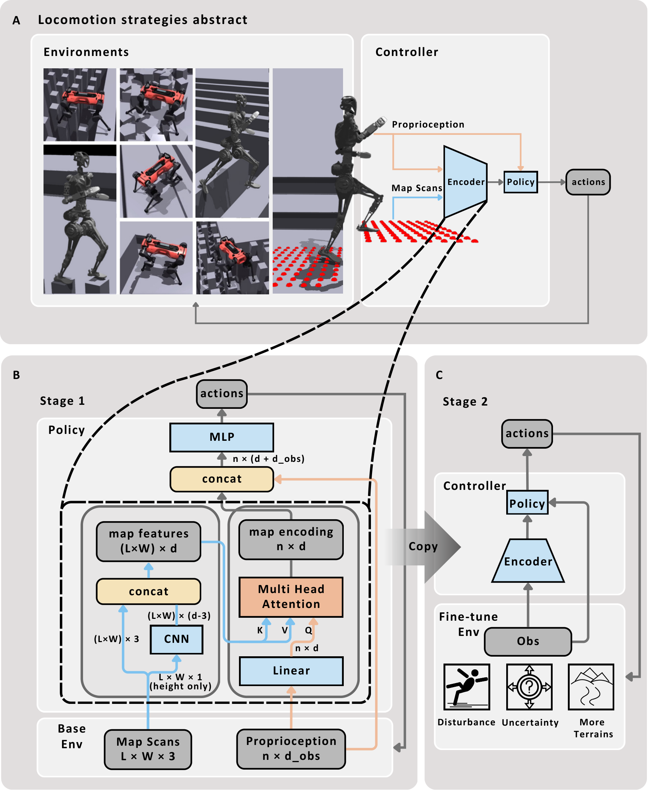
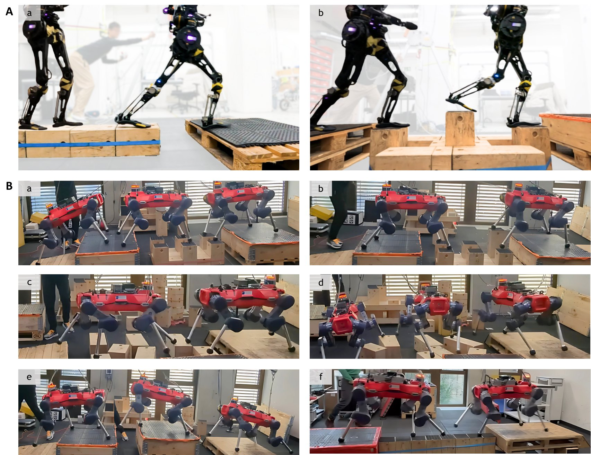
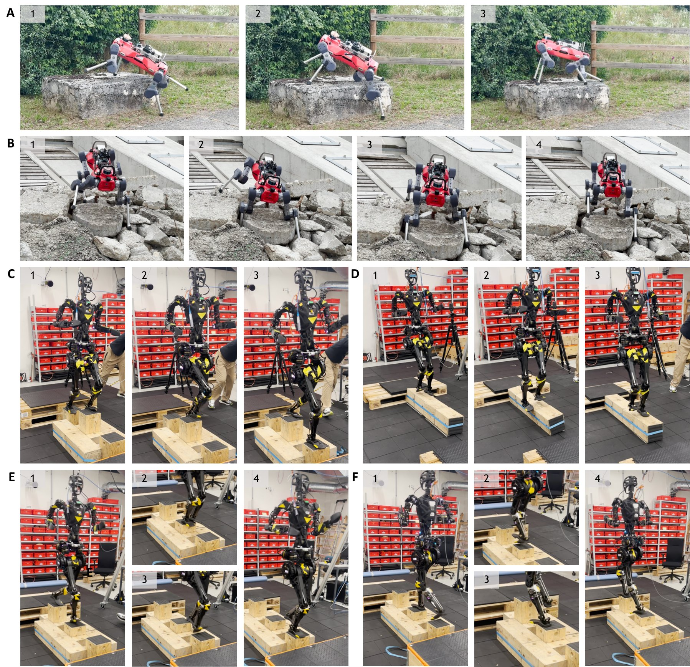
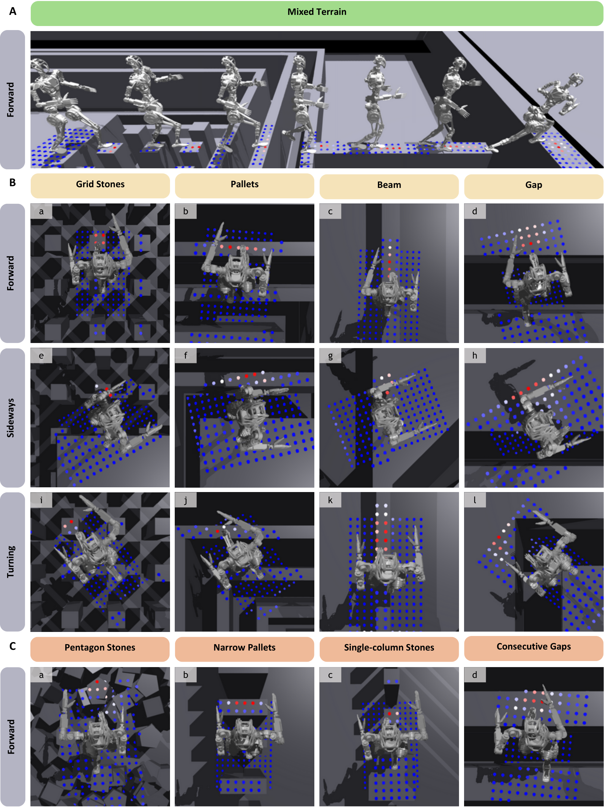
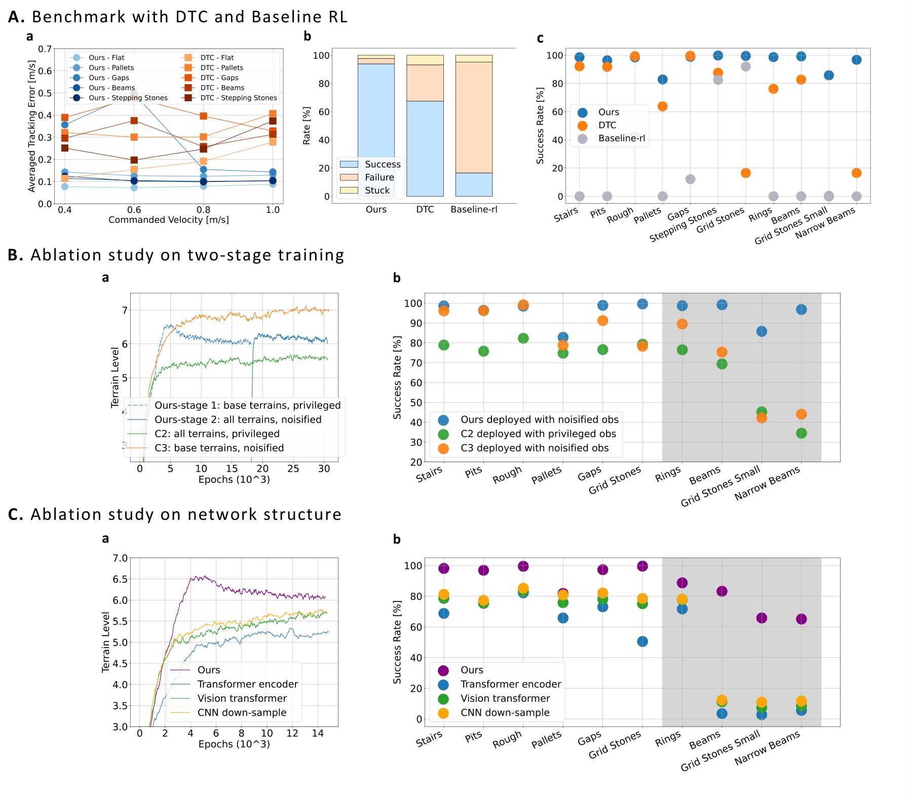

论文信息
- 正式题目：Attention-Based Map Encoding for Learning Generalized Legged Locomotion
- 后续称呼：AME-1。原论文标题里并没有 “AME-1”，这是 AME-2 为区分前后两代方法采用的名字。
- 作者：Junzhe He、Chong Zhang、Fabian Jenelten、Ruben Grandia、Moritz Bächer、Marco Hutter
- 期刊：Science Robotics，Vol. 10, Issue 105，2025 年 8 月 27 日
- DOI：10.1126/scirobotics.adv3604
- 预印本：arXiv:2506.09588
- 机器人：ANYmal-D、Fourier GR-1
一句话结论
AME-1 不显式预测落脚点，而是让“当前身体状态与运动命令”作为 query，在逐点地形特征中寻找与下一步最相关的位置；训练后，注意力热点自然落在未来可踩区域上，于是一个端到端 RL 策略同时获得稀疏地形精度、抗扰性和跨地形泛化。

原论文图 1：红色越强代表注意力权重越高；网络在没有落脚点标签的情况下学会关注下一步可踩区域。
1. 它想补上哪块空缺
复杂地形运动通常面临一个三角矛盾：
| 路线 | 优点 | 常见短板 |
|---|---|---|
| 模型规划 | 落脚精确、约束明确 | 计算贵，依赖模型与地图质量 |
| 端到端 RL | 抗扰、能吸收模型误差 | 容易过拟合，稀疏落脚不够精确 |
| 规划 + 学习 | 两者折中 | 系统复杂，部署时仍要运行规划器 |
AME-1 的问题意识非常明确：能不能让神经网络内部长出一个类似落脚规划器的表示，但不在部署时运行 MPC？
它的答案不是把整张高度图压成一个普通向量，而是保留地图的逐点结构，再用状态相关的注意力选择当前真正重要的点。
2. 整体数据流

原论文图 8：第一阶段用完美感知学习基本运动与地图编码，第二阶段加入困难地形、噪声、漂移和扰动。
机器人中心 2.5D 高度图 |
这张图最重要的不是用了 attention，而是 Q、K、V 分别代表什么。
- Query：机器人当前本体状态与命令的嵌入；
- Key / Value：地图每个采样点及其邻域的局部特征；
- 输出：随身体状态变化的地形表示。
同一块石头在机器人左脚腾空、右脚腾空、不同速度命令下，价值并不相同。AME-1 的权重会随状态改变，而普通 CNN 全局压缩很难显式保留这种对应关系。
3. 地图编码器到底怎么做
输入地图大小为 ，每个点用机器人坐标系下的三维坐标表示。网络只先处理高度 ：
- 两层 CNN，kernel size 为 5，zero padding 保持空间尺寸；
- 第一层 16 个通道，第二层输出 个通道；
- 与原始三维坐标拼接，得到 的逐点特征；
- 论文采用 ；
- 本体观测经线性层成为 的 query；
- MHA 对全部 个点加权，输出地图编码。
局部 CNN 不做下采样 很关键。它只扩大每个点的局部感受野，不提前抹掉“是哪一个点”。之后 MHA 才能进行逐点选择。
可以把单头注意力简写为：
这里的 softmax 权重就是论文可视化的红色热点。不过要谨慎：热点与未来落脚区域高度一致，不等于网络显式输出了落脚点，也不证明注意力就是完整的因果解释。
4. 两阶段训练为什么必要
第一阶段只用基础地形和 ground-truth 地图。目标是先把两个困难问题拆开：
- 学会基本运动；
- 初始化“本体状态如何查询地图”的对应关系。
第二阶段再加入：
- 更难、更多样的地形；
- 高度图噪声与查询漂移；
- 动力学扰动与模型不确定性；
- 站立时抑制无意义关节运动的额外奖励。
消融里，从头同时学习全部困难地形，或从头就在基础地形上加入感知噪声，收敛和最终成功率都更差。它说明这里的 curriculum 不只是常规“由易到难”，还在保护地图注意力的早期表征学习。
5. 观测、动作与奖励
Actor 的本体观测包含：
- 基座线速度、角速度；
- 重力在机体坐标系的投影；
- 关节位置与速度；
- 上一步动作；
- 机器人中心高度图；
- 线速度与角速度命令。
输出是关节目标位置。ANYmal-D 使用 14 项奖励，GR-1 使用 16 项，大体分为三组：
- 任务项：线速度/角速度跟踪、终止与碰撞惩罚；
- 规整项：动作变化、关节加速度、力矩、关节限位；
- 风格项：滑脚、跺脚、不希望的速度与姿态、跳跃式步态等。
所以 AME-1 仍然是速度命令跟踪器，不是 AME-2 那种目标点到达策略。这会影响它能否主动减速、绕行或为复合障碍选择长时间尺度动作。
6. 真机结果最值得看的地方

原论文图 3：GR-1 通过横梁、沟隙和单列踏石；ANYmal-D 通过随机踏石、箱体与 19 cm 宽横梁。
两套策略都直接从仿真 zero-shot 部署。论文报告：
- ANYmal-D 和 GR-1 在未训练过的混合 obstacle parkour 上达到 100% 成功率；
- ANYmal-D 能走 19 cm 宽横梁与随机布置踏石；
- GR-1 能动态通过单列踏石、横梁与间隙；
- 同一框架同时适配四足和双足，说明表示并不绑定单一形态。

原论文图 4：膝部支撑、手臂摆动、滑移恢复，以及 GR-1 在踏石上临时换脚跳。
我认为比成功率更有价值的是这些涌现行为。策略没有接触状态机，却会用 ANYmal 的膝部支撑身体；GR-1 会根据地形改变摆臂，并在落脚空间不足时进行单腿换脚跳。这说明“隐式选择接触位置 + 全身策略”确实比固定步态跟踪器更自由。
7. 注意力到底学到了什么

原论文图 7：不同头会在踏石、横梁、沟隙边缘等区域形成不同模式，且权重随机器人状态改变。
从可视化可以得到三个判断：
- 注意力不是简单寻找最高点，而是倾向于可落脚支撑面；
- 同一地形下，热点会随步态相位与命令移动；
- 多个 head 可以分担不同空间关系，而不是所有 head 复制同一张热图。
这也是论文最漂亮的一点：没有任何 future foothold 监督，只有最终运动回报，仍然长出了近似接触规划的中间表示。
8. 定量实验与消融

原论文图 6：与 DTC、baseline RL 比较，并验证两阶段训练和网络结构。
在 ANYmal-D 仿真中：
- 相比 DTC，AME-1 在多数稀疏地形与速度命令下具有更低跟踪误差；
- 总体成功率相对 DTC 高 26.5%，相对 baseline RL 高 77.3%；
- DTC 在 20 cm、12 cm 随机方石和 15 cm 窄梁上成功率低于 20%，原因是规划器的可踩区域阈值会拒绝这些支撑面；
- Transformer encoder、继续下采样的 CNN、ViT 三种替代编码器，在训练收敛和未见地形成功率上都不如逐点 MHA；
- 两阶段训练比“全部地形从头训练”和“从头加入噪声”更稳定。
这里要注意，“高 26.5%”是论文报告的相对比较结果，不应误写成 AME-1 的绝对成功率为 26.5%。
9. AME-1 为什么还需要 AME-2
AME-1 的 query 只来自本体状态。它很擅长回答：
以我现在的身体状态，附近哪个点适合下一次接触？
但在混合地形中，还需要先回答：
我整体处于什么地形？前面是连续踏石、攀爬平台，还是二者的技能切换？
局部点本身可能非常相似，正确动作却取决于更远的结构。AME-2 的消融后来非常直接地揭示了这个缺口：AME-1 在纯稀疏 Test 1 为 99.2%，但在三组混合测试中只有 29.2%、32.2%、44.1%；AME-2 加入全局上下文后分别达到 93.8%、99.7%、90.6%。
10. 局限
论文自己列出三点：
- 训练需要数天，调参代价很高；
- 2.5D 高度图无法表示悬空结构、多层表面和狭窄空间；
- GR-1 的手臂只用于运动协调，尚未处理 locomotion 与 manipulation 对手臂的竞争。
我再补两点阅读上的判断：
- 地图编码再稳健，也建立在外部 elevation mapping 能提供可用输入的前提上；
- 速度跟踪命令适合连续遥控，却不天然鼓励绕行、蓄力和复杂技能切换。
11. 我会怎么复现
推荐按下面顺序做，而不是一开始复制完整真机系统：
- 先在 ANYmal 类四足上复现基础地形 + ground-truth height map；
- 保持二维网格分辨率，不让局部 CNN 下采样；
- 记录每个 head 的 attention map，检查它是否随步态相位移动；
- 再引入窄梁、踏石和沟隙课程；
- 最后加入地图噪声、坐标漂移、延迟与动力学随机化；
- 分别测试“未见形状”和“未见地形组合”，不要把两者混为一种泛化。
12. 最后的理解
AME-1 的贡献并不是“把 Transformer 用在机器人上”这么泛。它给出了一个很具体的归纳偏置：
保留地形点的空间身份，让当前身体状态去查询这些点，再把查询结果直接交给全身控制器。
这让端到端策略内部出现了类似接触规划的功能，同时保留 RL 对滑移、碰撞和模型误差的适应能力。它已经解决了“下一脚踩哪里”的局部问题；AME-2 则继续补上“我正处于什么整体地形、感知哪里不可信、下一段技能该怎么衔接”。